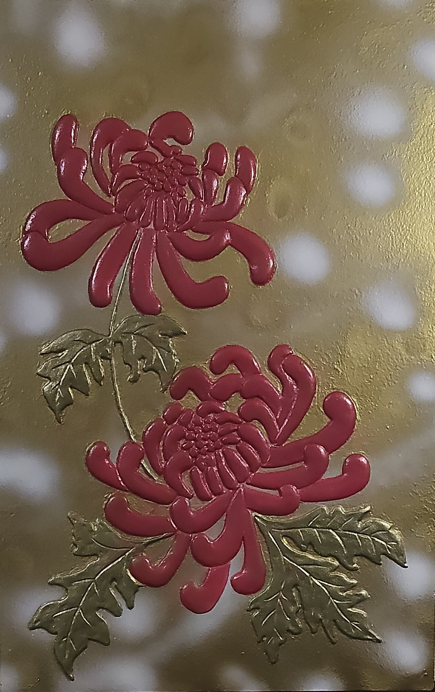

NICOLETA FILIP ART
CRISANTEMOS 1
Composición floral ornamental protagonizada por dos crisantemos en relieve, de pétalos alargados y curvos en tono rojo burdeos, acompañados de hojas ornamentales con acabado metálico.
Sobre la obra
CRISANTEMOS 1 presenta una composición vertical de carácter ornamental en la que destacan dos crisantemos de intenso tono rojo burdeos.
Las flores están representadas mediante pétalos alargados, curvados y superpuestos que generan una marcada sensación de volumen y profundidad.
El conjunto se acompaña de hojas de perfil recortado y nervaduras definidas, tratadas en acabados metálicos verdosos y dorados.
Presentación artística
El relieve de los pétalos crea una estructura rica en volumen, destacando la forma característica de los crisantemos y aportando una fuerte presencia escultórica a las flores.
El fondo presenta un tratamiento dorado con motivos circulares difuminados que aportan profundidad y enmarcan visualmente la composición.
El contraste entre las flores oscuras, el follaje metálico y el fondo dorado refuerza el carácter ornamental de la pieza.
Ficha técnica
- Año
- 2026
- Dimensiones
- 40 × 60 cm
- Soporte
- Madera
- Técnica
- Técnica estándar.
- Categoría
- Floral
Si deseas recibir información sobre esta obra, puedes solicitarla directamente.
SOLICITAR INFORMACIÓN →